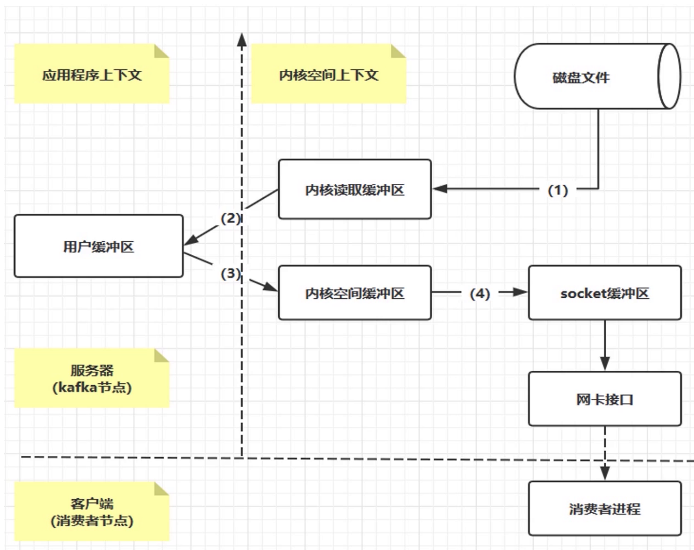
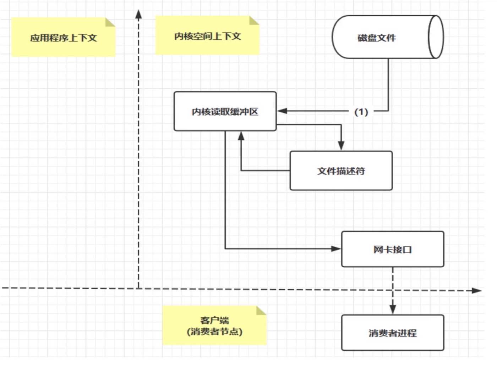

Kafka介绍与高性能分析
Kafka是LinkedIn开源的分布式消息系统，目前归属于Apache顶级项目，Kafka主要特点是基于Pull的模式来处理消息消费，追求高吞吐量，一开始的目的就是用于日志收集和传输。 Kafka0.8版本开始支持复制，不支持事务，对消息的重复、丢失、错误没有严格要求，适合产生大量数据的互联网服务的数据收集业务。
1 Kafka特点
- 支持分布式，支持消息分区的概念，他的生产者和消费者是一一对应的，否则会造成资源的浪费
- 跨平台，支持多种语言
- 实时性，数据支持实时处理和离线处理，只要存储足够，即使消息堆积上亿级别也是可以的
- 伸缩性，支持水平扩展
2 Kafka高性能
- 顺序写，Page Cache空中接力，高效读写
- 顺序写可以提高磁盘的利用率，消费者可以顺序不删除消费，避免磁盘的随机写
- Page Cache （TODO）
- 高性能、高吞吐
- 后台异步、主动Flush
- 预读策略、IO调度
2.1 Page Cache
Page Cache是操作系统主要实现的一种磁盘缓存机制，他的目的是减少磁盘IO的操作，因为频繁的磁盘IO操作，会影响系统的性能。具体来说就是讲磁盘中的数据缓存到内存中，把对磁盘的访问变成对内存的访问。  上图所示，应用程序想获取相应的数据时，首先会在内存中查询，看是否存在想要的数据，如果存在，直接返回，若不存在，则需要对磁盘发起IO请求，获取到数据之后，首先会将数据加入到缓存页中，去做一个缓存，然后在返回给应用程序进程。 当应用程序想将数据写入到磁盘中时，同样也会先去缓存区中check是否存在，如果不存在，会先在缓存区创建一个页，将数据先写入到缓存页中，操作系统会通过自行调度将数据写入硬盘中。 上图流程中，对数据一共做了4次copy，通常常用的是zerocopy。
2.2 ZeroCopy
 Kafka内部使用了大量的PageCache，ZeroCopy，这是它高性能高吞吐的重要原因。 上图从磁盘将数据写入到内核缓冲区后，直接将数据写入到网卡接口，发送给消费者去消费，如果有多个消费者，也都是从同一个缓冲区直接写入，从而实现了0拷贝。
3 Kafka集群模式
 Kafka使用Zookeeper来协调，kafka大部分时间都是采用内存级别的存储，当生产者和消费者速率相当的时候，它很少回去向磁盘中存取数据，并且它采用内存级别的副本来实现数据的可靠性，当一个节点宕机后，会由其他节点继续提供服务。
Kafka使用Zookeeper来协调，kafka大部分时间都是采用内存级别的存储，当生产者和消费者速率相当的时候，它很少回去向磁盘中存取数据，并且它采用内存级别的副本来实现数据的可靠性，当一个节点宕机后，会由其他节点继续提供服务。